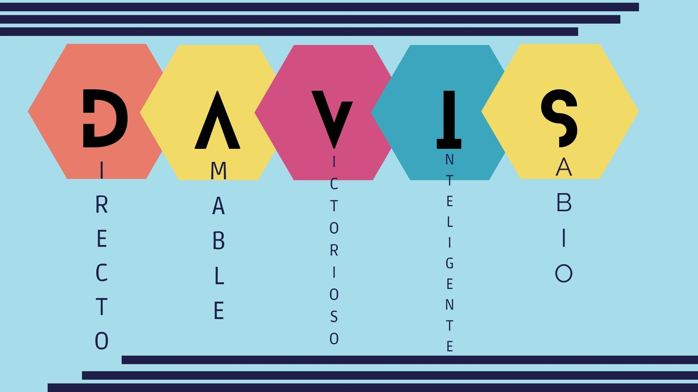

Aquí tuve un poco de dificultad para poder elegir las palabras que me definieran como persona.
Pero gracias a Dios, lo logré
El inicio de mi historia.
Son los primeros años escolares. Aquí empiezo una etapa de mi vida muy importante
El Año de los retos y mi crecimiento. El Año con más dificultades y más cambios.
El inicio de proyectos y sueños. El fin de una etapa y el inicio de otra
Una imagen lo más apegada a mí.
Me visualizo como un profesional de alto grado desempeñandome en una compañia exitosa. Destacar como un buen arquitecto y posteriormente crear mi propio negocio sobre construcciones e inmuebles para empresas u organizaciones de renombre. En el área familiar, me visualizo en un matrimonio sólido, estable, feliz y bendecido; Buscando juntamente con mi familia estar cada día mas cerca de Dios, buscando hacer su voluntad. También me visualizo en una relación más íntima con Dios, obedeciendo su palabra. Finalmente, me observo viviendo feliz, en paz y satisfecho por todo lo conseguido.
Mi misión en la vida... es ser un siervo de Dios ejemplar y ser un guía para los jovenes de esta generación. Para que vivan de manera diferente y no busquen lo incorrecto. También ser un profesional destacado en el campo que elija. Llevar una vida feliz, comprometida y bendecida con mi familia, y velar que el núcleo de nuestras vidas sea unicamente Dios.